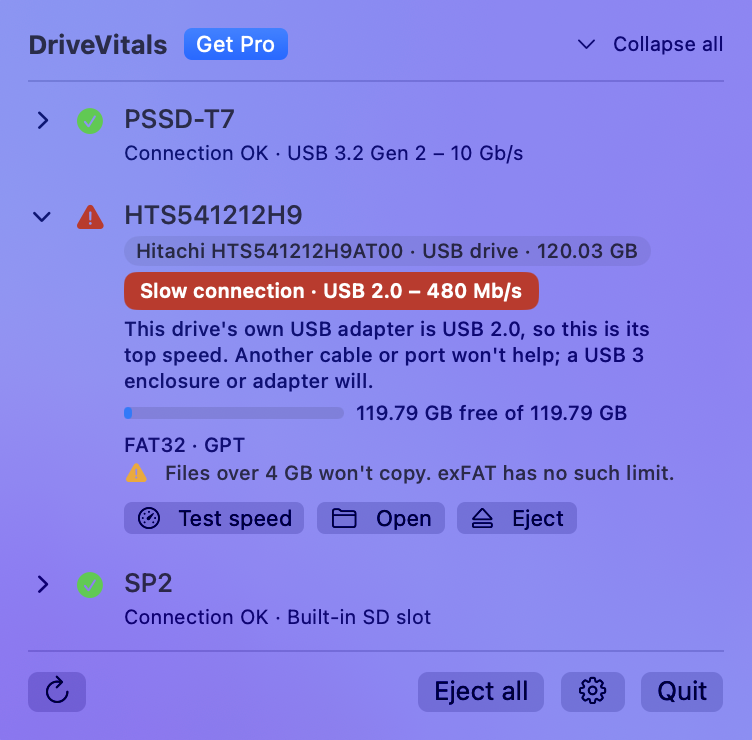

Is your cable slowing your SSD?
DriveVitals lives in your Mac's menu bar and shows the real speed of every drive, SD card and cable, plus the health of your internal SSD. When something is holding a drive back, it tells you in plain English.
For macOS 14 Sonoma or later. Notarized by Apple. 0% CPU when idle. No account, no tracking.

Everything your drives won't tell you
Finder shows a drive's name and free space. DriveVitals shows how it's actually connected and how it's doing.
-
The real connection speed
See the speed your Mac actually negotiated with each drive, not the number on the box. USB 2.0, 5, 10, 20 Gb/s or Thunderbolt.
-
A warning when a cable is slow
Plug in a fast SSD through a USB 2.0 cable, hub or adapter and you get a notification straight away, before you start a big copy.
-
The health of your Mac's SSD
How much of its rated life is used, how many terabytes have been written, its temperature and hours of use. If the SSD reports a problem, you're told to back up.
-
A speed test with a verdict
Run a 1 GB or 4 GB test and read what the result means: whether the drive, the card or the cable is the bottleneck, and what speed to expect.
-
Eject that tells you why not
When a drive won't eject, DriveVitals names the app that's still using it. If nothing else works, Force Eject is one click away.
Free to use. Pro when you want the details.
The free version covers what most people need every day. Pro is a one-time purchase, with no subscription.
DriveVitals
Free- Every drive and SD card, with its real connection speed
- Slow-cable warnings
- Eject, Mount and Force Eject from the menu bar
- Internal SSD health status and warnings
- 3 speed tests with a verdict, to try Pro
DriveVitals Pro PRO
$7.99one time- Unlimited speed tests with a verdict
- SSD details: life used, terabytes written, temperature, hours
- SD card details: type, speed class, maker, date
- The name of the app blocking an eject
- Copy results to share in a review or forum
Works on up to 3 Macs. Includes all 1.x updates. 14-day refund, no questions asked.
Questions
Is the free version really free?
Yes, with no time limit and no account. You get every drive's connection speed, slow-cable warnings, eject and mount, and internal SSD health warnings for as long as you use it. Three speed tests with a verdict are included so you can try Pro.
How do I install it?
Open DriveVitals.dmg, drag DriveVitals into Applications, then open it. Its icon appears in the menu bar at the top of the screen. You can make it start when you log in from Settings.
How many Macs can I use Pro on?
Up to 3. Moving to a new Mac? Open Settings, then License, and click Remove license from this Mac before activating it on the new one. You can also manage your Macs from the link in your purchase email.
Are updates included?
Yes. DriveVitals checks for updates and installs them for you, and every 1.x update is included with Pro.
Can I get a refund?
Yes, within 14 days of buying, for any reason. Email support@drivevitals.app with your order email. Refund policy
Why does macOS ask to let DriveVitals access a removable volume?
macOS asks once, the first time DriveVitals writes a test file to a USB drive or SD card. Click Allow and the test continues by itself. Viewing speeds and health doesn't need this permission.
Why does my SD card stop at about 90 MB/s?
That's the normal limit of UHS-I cards and most card readers, including the SD slot in many Macs. Cards rated higher usually need the maker's own reader. DriveVitals explains this in the verdict, so you know the card isn't faulty.
Can it show the health of USB drives too?
Not yet. Most USB enclosures don't pass health data through to macOS, so DriveVitals shows health for your Mac's internal SSD and speed for everything else.
Will it slow down my Mac?
No. DriveVitals is a 5.4 MB app. Waiting in the menu bar, it uses 0% CPU and about 42 MB of memory, with no measurable energy impact. It only works harder during a speed test you start: a few seconds at under a third of one CPU core, then it goes straight back to idle. Measured on a MacBook Pro with M1 Pro, macOS 15.
What data does DriveVitals collect?
None. Speed tests and drive details never leave your Mac. The app only goes online to check for updates and, if you buy Pro, to verify your license. Privacy policy
Built by an engineer. Tested like one.
Twenty years in engineering, coding, telecom and IT taught me to measure, not guess. I'm Darkhan, a telecommunications engineer (MSc, University of Melbourne). I started out building embedded hardware and firmware, then delivered networks and IT solutions for telecom operators, banks and enterprises. I'm also a digital creator: on DailyTweak, my YouTube channel in English and Russian, I review tech, AI tools, apps and code.
While testing SSDs, I kept running into problems macOS never revealed: a cable quietly running at USB 2.0 speed, your Mac's own SSD slowly wearing out, a drive that won't eject without saying why. So I built DriveVitals to help you fix them.